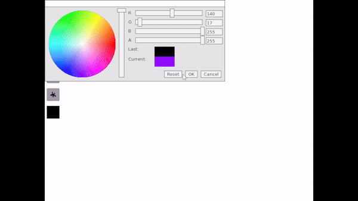

2D-Drawing Application


Why did I do this project?
In this project, I embarked on an exploration of 2D graphics and user interfaces using C++. The process involved integrating external libraries, which enhanced my understanding of render loops, user input, and the nuances of source control branching. Working on this project, I delved deeper into practical aspects of C++ programming and gained valuable experience in working with complex, multi-component systems.
SFML
Working with SFML provided invaluable experience in managing window events, rendering graphics, and handling user input within a graphics application. In this project, I successfully implemented the core features of a real-time interactive application. A key contribution was the development of the main render loop in DrawingApp.cpp, which can render a diverse array of shapes onto a window. This component also includes a specialized render target for freehand drawing.
TGUI
Incorporating the TGUI library into my C++ project was a great experience, deepening my understanding of GUI development. Through TGUI, I developed my skills in managing event-driven systems, particularly the listener pattern. This experience was instrumental in teaching me handling of library integration. A notable application was in developing my color picker system, where TGUI's capabilities were seamlessly combined with other libraries to create an efficient and user-friendly interface. This project not only enhanced my technical skills but also provided practical insights into creating integrated systems in software development.
Branching
I've been using Git as my preferred source control tool for some time, but my solo projects had not exposed me to the full potential of branching. Aware of its importance, I made a concerted effort to use branching during this project. This learning experience enabled me to effectively manage different development streams, creating dedicated branches for new features like drawing shapes, implementing save functionality, and freeform drawing. Each feature was developed in its branch and later merged into the main branch when it was ready for “production”.
This approach not only streamlined the development process but also proved to be a safeguard against potential disruptions in the stable version of my project. By isolating changes in separate branches, I was able to experiment without risking the integrity of the main codebase. The practice of branching, which I initially adopted out of necessity for this project, has now become an integral part of my workflow, significantly enhancing both my efficiency and the reliability of my software development process. Moving forward, I plan to continue leveraging this strategy, as it has already proven invaluable in maintaining a stable and functional codebase.
Unit Testing
The primary objective of this testing plan is to validate the functionality and reliability of all CRUD (Create, Read, Update, Delete) operations performed on the database. This encompasses ensuring that these operations provide accurate, consistent, and reliable data manipulation. The plan aims to cover various scenarios, including normal operations, edge cases, and error handling, to comprehensively assess the robustness of the database interactions.
The testing was conducted using the xUnit testing framework. To simulate the database environment without affecting the actual SQLite database, the project leverages an in-memory database. This approach facilitates testing in a controlled environment, allowing for the isolation of database operations. The in-memory database is designed to replicate the behavior of the actual database, enabling a thorough evaluation of CRUD functionalities. The tests will be executed to assess the correctness of the database operations, with particular attention to the consistency of the data returned and the system's response to various input conditions. The test results will provide insights into the performance and reliability of the database operations, forming the basis for any necessary refinements or optimizations.
What did I learn?
This project served as an outstanding exercise in various area of software development and compute graphics. It began with a dive into the fundamentals of 2D graphics programming, where I developed a solid understanding of 2D graphics ranging from the creation of simple shapes to the implementation of more complex functionalities like color selection, tool switching, and free-handed drawing. Equally important was the focus on user interface design, which taught me how to create easy to use GUI in C++. As the project progressed, I encountered and resolved numerous challenges, a process that not only sharpened my problem-solving abilities but also significantly improved my debugging techniques. This hands-on experience was crucial in developing a more methodical and efficient approach to troubleshooting. Project management was another critical aspect of this endeavor. I oversaw the project from its inception through to completion, which involved planning, implementation, testing, and iteration. This comprehensive experience not only bolstered my technical skills in graphics programming and UI design but also played a pivotal role in my overall development as a software developer, equipping me with a diverse set of skills and a holistic understanding of software project lifecycle.